蝗櫁ｷｯ隰帷ｿ・/strong> -KiCad邱ｨ-
髢狗匱迺ｰ蠅・/h3>
- KiCad 6.0,KiCad 7.0,KiCad 8.0
- Ubuntu22.04
KiCad縺ｮ蜈ｨ菴捺ｧ区・
kicad縺ｫ蜷ｫ縺ｾ繧後ｋ繝励Ο繧ｰ繝ｩ繝縺ｨ讖溯・
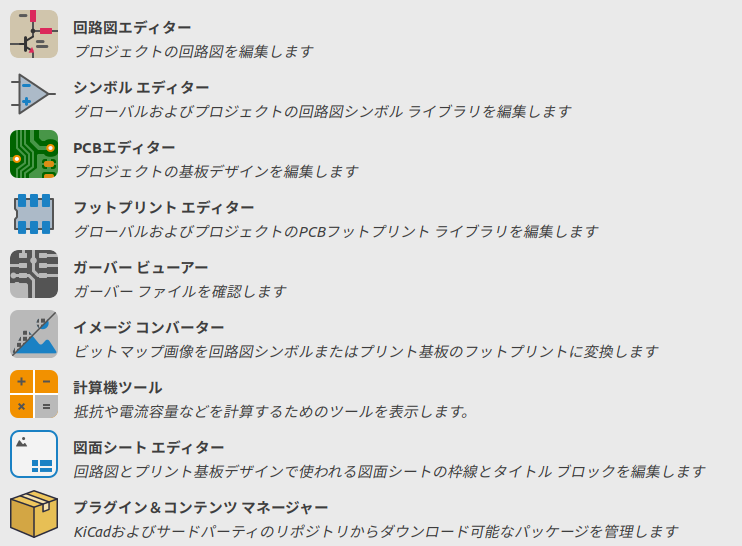
險ｭ險医ヵ繝ｭ繝ｼ
- 謇矩・縲蝗櫁ｷｯ蝗ｳ繧剃ｽ懈・縺吶ｋ
- 謇矩・縲蝓ｺ譚ｿ繝ｬ繧､繧｢繧ｦ繝茨ｼ・CB・峨ｒ菴懈・縺吶ｋ
- 謇矩・縲繧ｬ繝ｼ繝舌ョ繝ｼ繧ｿ縲√ラ繝ｪ繝ｫ繝・・繧ｿ繧貞・蜉帙☆繧・/li>
縺薙ｌ繧峨・謇矩・↓繧医ｊ蝗櫁ｷｯ繧定ｨｭ險医☆繧九・/p>
險ｭ險医ヵ繝ｭ繝ｼ蝗ｳ
graph TB
A[蝗櫁ｷｯ險ｭ險磯幕蟋犠 --> B[蝗櫁ｷｯ蝗ｳ蜈･蜉嫋
B --> C[繧｢繝弱ユ繝ｼ繧ｷ繝ｧ繝ｳ・医Μ繝輔ぃ繝ｬ繝ｳ繧ｹ逡ｪ蜿ｷ謖ｯ繧奇ｼ云
C --> D[繝輔ャ繝医・繝ｪ繝ｳ繝磯未騾｣莉倥￠]
D --> F{繧ｨ繝ｬ繧ｯ繝医Μ繧ｫ繝ｫ繝ｻ繝ｫ繝ｼ繝ｫ繝ｻ繝√ぉ繝・けOK・毳
F --> |no| B
F --> |yes| G[蝗櫁ｷｯ險ｭ險亥ｮ御ｺ・
H[繝代ち繝ｼ繝ｳ險ｭ險磯幕蟋犠 --> I{隱ｭ縺ｿ霎ｼ縺ｿ譎ゅお繝ｩ繝ｼ?}
I --> |no| J[驛ｨ蜩・・鄂ｮ 蝓ｺ譚ｿ螟門ｽ｢]
I --> |yes| D
J --> L[髮ｻ貅舌・繧ｰ繝ｩ繧ｦ繝ｳ繝牙━蜈育ｮ・園驟咲ｷ咯
L --> M[驟咲ｷ咯
M --> N[菫ｮ豁｣縲∽ｻ穂ｸ翫￡]
N --> O{繝・じ繧､繝ｳ繝ｻ繝ｫ繝ｼ繝ｫ繝ｻ繝√ぉ繝・けOK・毳
O --> |yes| P[蝓ｺ譚ｿ險ｭ險亥ｮ御ｺ・
O --> |no| N
P --> Q[繧ｬ繝ｼ繝舌・繝・・繧ｿ蜃ｺ蜉・繝峨Μ繝ｫ繝ｻ繝・・繧ｿ蜃ｺ蜉・繧ｬ繝ｼ繝舌・繝薙Η繝ｼ繧｢・医ヵ繧｡繧､繝ｫ遒ｺ隱搾ｼ云
陬懆ｶｳ
kiCad縺ｫ縺ｯFreeRoution縺ｨ縺・≧閾ｪ蜍暮・邱壹ヤ繝ｼ繝ｫ繧剃ｽｿ逕ｨ縺吶ｋ縺薙→縺後〒縺阪ｋ
KiCad縺ｮ襍ｷ蜍輔→譁ｰ隕上・繝ｭ繧ｸ繧ｧ繧ｯ繝医・菴懈・
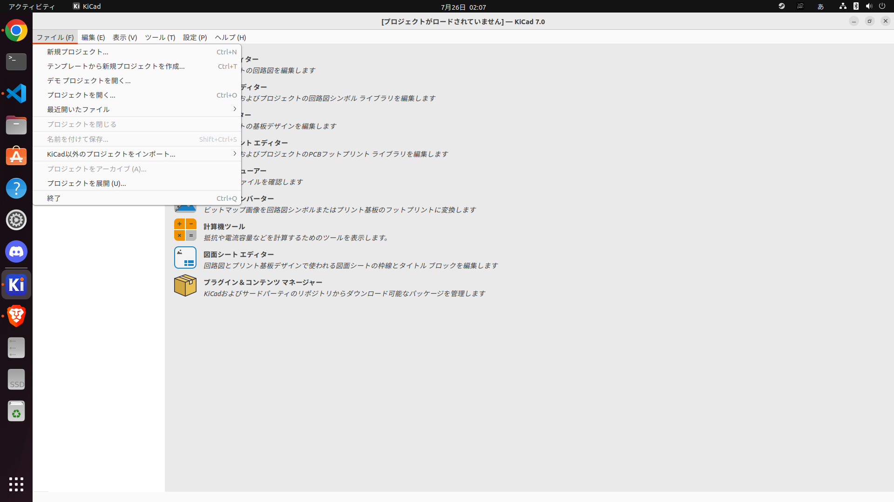
蟾ｦ荳翫・[繝輔ぃ繧､繝ｫ]縺九ｉ[譁ｰ隕上・繝ｭ繧ｸ繧ｧ繧ｯ繝・繧帝∈謚櫁い菴懈・縺吶ｋ 縺薙％縺ｧ縺ｯ繝輔ぃ繧､繝ｫ蜷阪ｒ[hoge00]縺ｨ縺吶ｋ
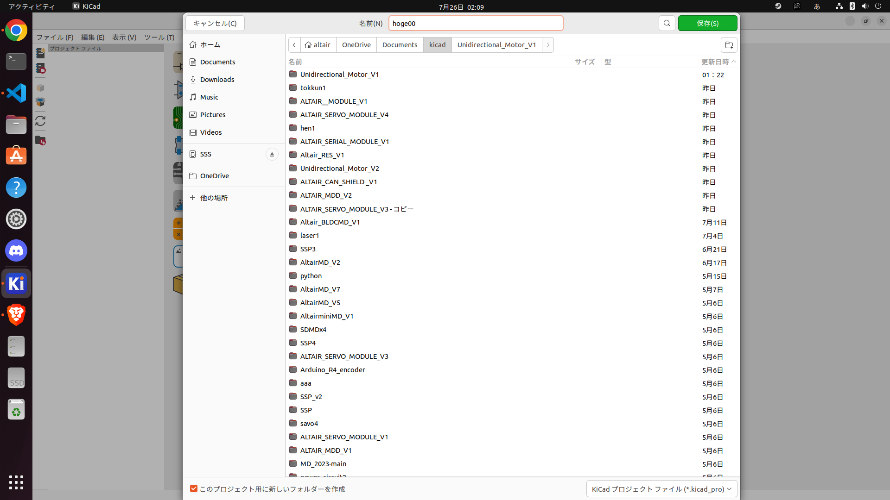
縺吶ｋ縺ｨ莉･荳九・繧医≧縺ｫ繝輔ぃ繧､繝ｫ縺・縺､菴懈・縺輔ｌ繧・/p>
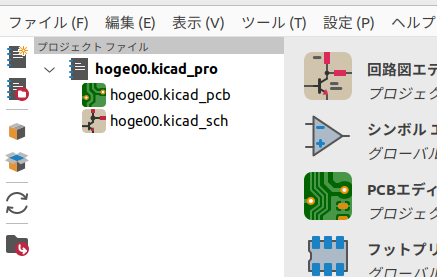
縺昴ｌ縺ｧ縺ｯ譌ｩ騾溷屓霍ｯ繧定ｨｭ險医＠縺ｦ縺・￥
繧ｹ繝・ャ繝暦ｼ托ｼ壼屓霍ｯ蝗ｳ蜈･蜉・/h2>
[hoge00.kicad_sch]繧偵ム繝悶Ν繧ｯ繝ｪ繝・け縺励※髢九￥縲・/p>
縺吶ｋ縺ｨ蝗櫁ｷｯ蝗ｳ繧ｨ繝・ぅ繧ｿ縺碁幕縺九ｌ繧・
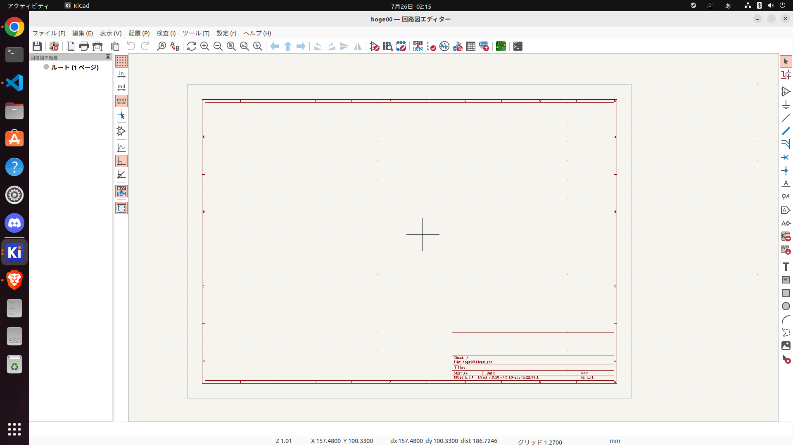
莉･荳九・謇矩・〒辟｡螳牙ｮ壹・繝ｫ繝√ヰ繧､繝悶Ξ繝ｼ繧ｿ繧剃ｽ懈・縺励※縺・￥ - 謇矩・ｼ托ｼ夐Κ蜩√・驟咲ｽｮ - 謇矩・ｼ抵ｼ夐・邱壹ｒ縺翫％縺ｪ縺・- 謇矩・ｼ難ｼ壽枚蟄励・邱ｨ髮・- 謇矩・ｼ費ｼ壹Μ繝輔ぃ繝ｬ繝ｳ繧ｹ險伜捷縺ｫ逡ｪ蜿ｷ繧偵▽縺代ｋ - 謇矩・ｼ包ｼ壹ヵ繝・ヨ繝励Μ繝ｳ繝医・髢｢騾｣莉倥￠ - 謇矩・ｼ厄ｼ哘RC螳溯｡・/p>
謇矩・ｼ托ｼ夐Κ蜩√・驟咲ｽｮ
蝗櫁ｷｯ縺ｧ菴ｿ逕ｨ縺吶ｋ驛ｨ蜩√ｒ驟咲ｽｮ縺励※縺・￥
蝗櫁ｷｯ蝗ｳ繧ｨ繝・ぅ繧ｿ縺ｮ蜿ｳ蛛ｴ縺ｮ繝・・繝ｫ繝ｻ繝舌・縺ｮ荳翫°繧・ 逡ｪ逶ｮ縺ｫ陦ｨ遉ｺ縺輔ｌ縺ｦ縺・ｋ縲後す繝ｳ繝懊Ν繧帝・鄂ｮ縲阪ｒ驕ｸ謚槭＠縺溽憾諷九〒縲∫判髱｢縺ｮ驕ｩ蠖薙↑蝣ｴ謇縺ｧ繧ｯ繝ｪ繝・け縺吶ｋ縺ｨ縲・繧ｷ繝ｳ繝懊Ν繧帝∈謚槭阪・繧ｦ繧｣繝ｳ繝峨え縺檎樟繧後ｋ縲・SC1815繧貞・蜉帙＠OK繧呈款縺吶・/p>
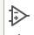
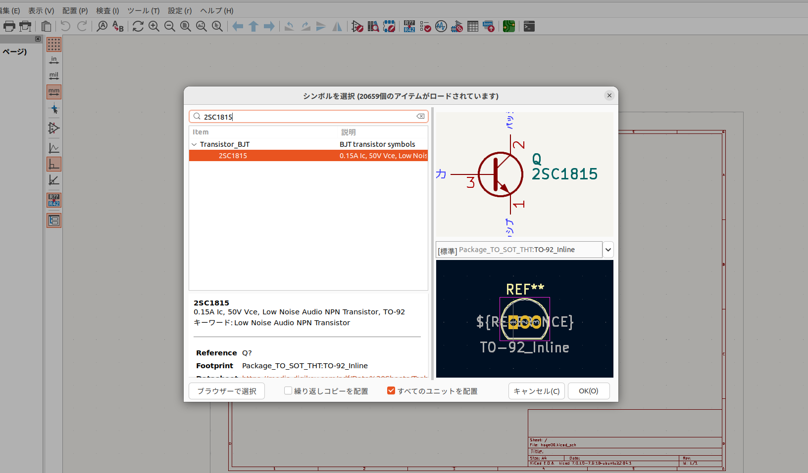
繧ｫ繝ｼ繧ｽ繝ｫ縺ｫ2SC1815縺ｮ繧ｷ繝ｳ繝懊Ν縺瑚｡ｨ遉ｺ縺輔ｌ繧九・縺ｧ縲∽ｽ咲ｽｮ繧呈ｱｺ繧√※驟咲ｽｮ縺吶ｋ縲√け繝ｪ繝・け縺吶ｋ縺ｨ驟咲ｽｮ縺輔ｌ繧・/p>
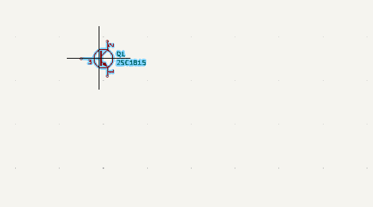
繝吶・繧ｹ縺悟髄縺九＞蜷医≧繧医≧縺ｫ縺励※縲√ｂ縺・縺､縺ｮ2SC1815繧帝・鄂ｮ縺吶ｋ縲・繧ｷ繝ｳ繝懊Ν繧帝∈謚槭＠縺溽憾諷九〒蜿ｳ繧ｯ繝ｪ繝・け繧呈款縺吶→繝｡繝九Η繝ｼ繝舌・縺悟・縺ｦ縺上ｋ縲ゅ◎縺薙〒豌ｴ蟷ｳ蜿崎ｻ｢繧帝∈謚槭＠縲∝髄縺阪ｒ繝吶・繧ｹ縺悟髄縺九＞蜷医≧繧医≧縺ｫ縺吶ｋ
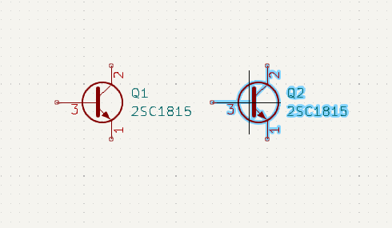
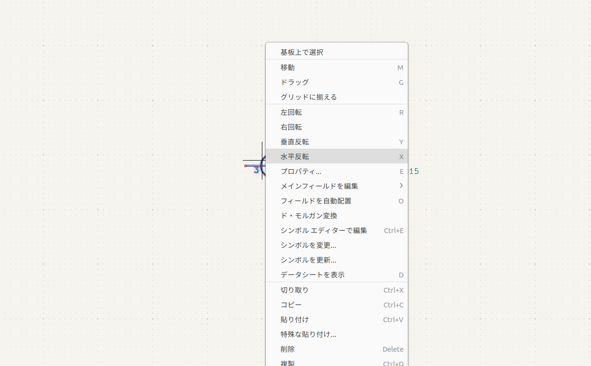
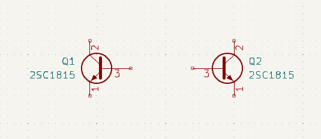
驟咲ｽｮ蝣ｴ謇繧剃ｿｮ豁｣縺吶ｋ縺ｫ縺ｯ縲・Κ蜩√・荳翫↓繧ｫ繝ｼ繧ｽ繝ｫ 繧堤ｽｮ縺・※繧ｭ繝ｼ繝懊・繝峨・ [M] 繧ｭ繝ｼ繧呈款縺・ 繧ｳ繝ｳ繝・Φ繧ｵ[C_Polarized]繧帝∈繧薙〒驟咲ｽｮ縺吶ｋ. 繧ｷ繝ｳ繝懊Ν縺ｯ驕ｸ謚槭＠縺ｦ [Ctrl・気] 繧ｭ繝ｼ繧・謚ｼ縺吶→縲√さ繝斐・縺励※ [Ctrl・儀] 繧ｭ繝ｼ縺ｧ雋ｼ繧贋ｻ倥￠縺後〒縺阪ｋ縲ゅ∪縺溘・[R] 繧ｭ繝ｼ縺ｧ蝗櫁ｻ｢縺吶ｋ縲・/p>
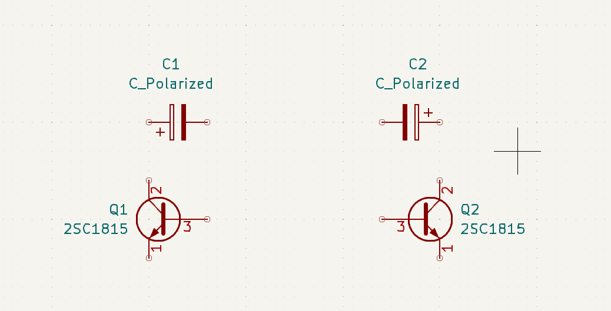
蜷後§繧医≧縺ｫ縲∵慣謚励→LED繧帝・鄂ｮ縺吶ｋ縲∵慣謚励・R, LED縺ｯLED繧剃ｽｿ縺・/p>
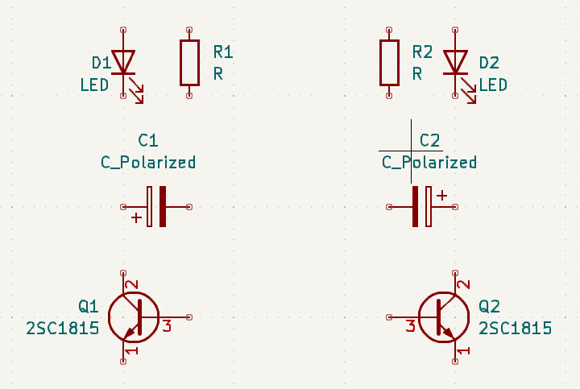
繧ｳ繝阪け繧ｿ繧帝・鄂ｮ縺吶ｋ縲ゅ靴onnector_Generic縲阪・ 荳ｭ縺ｫ縺ゅｋ [Conn_01x02]繧剃ｽｿ縺・/p>
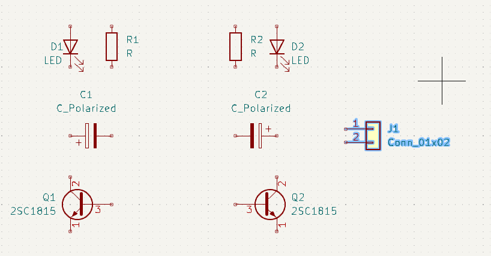
謇矩・ｼ抵ｼ夐・邱壹ｒ縺翫％縺ｪ縺・/h3>
繝ｯ繧､繝､繝ｼ繧定ｿｽ蜉繧帝∈謚槭＠縲・Κ蜩∝酔螢ｫ繧帝・邱壹☆繧九・/p>
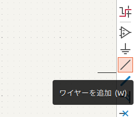
[ESC]繧ｭ繝ｼ縺ｧ蜿悶ｊ豸医＠縲ーCtrl+Z]繧ｭ繝ｼ縺ｧ荳縺､蜑阪↓謌ｻ繧後ｋ縲・/p>
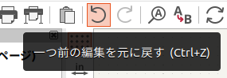
蜿ｳ蛛ｴ縺ｮ繧｢繧､繧ｳ繝ｳ繧呈款縺吶％縺ｨ縺ｧ譁懊ａ縺ｫ驟咲ｷ壼庄閭ｽ縺ｫ縺ｪ縺｣縺溘ｊ縺吶ｋ縲・/p>
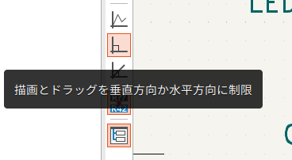
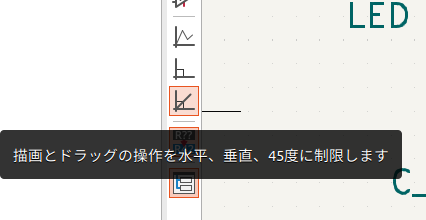
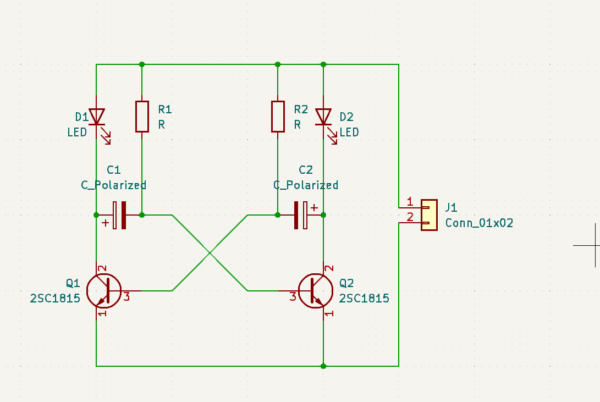
髮ｻ貅舌す繝ｳ繝懊Ν繧定ｿｽ蜉縺吶ｋ
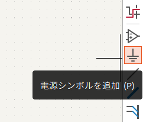
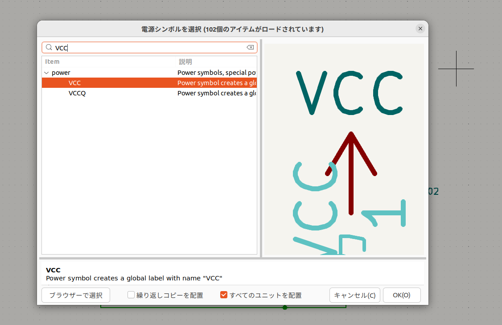
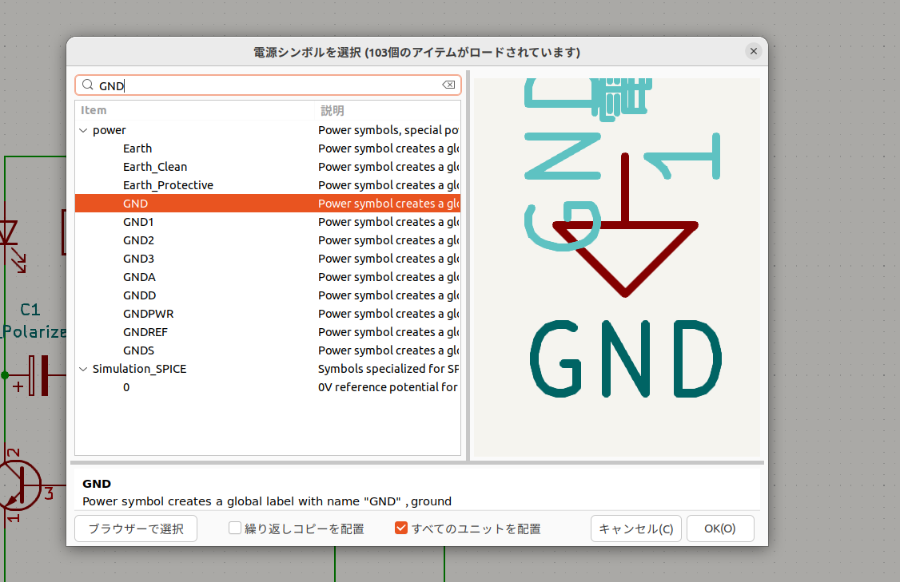
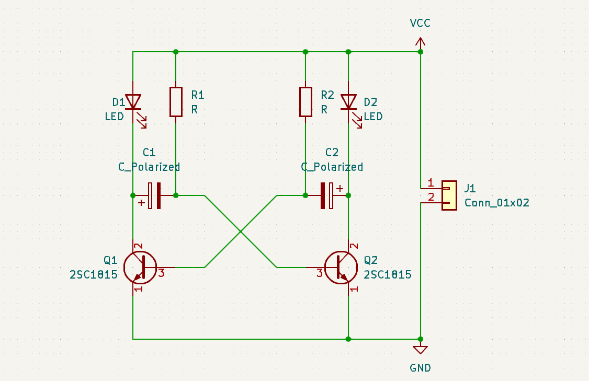
謇矩・ｼ難ｼ壽枚蟄励・邱ｨ髮・/h3>
C_Polarized縺ｪ縺ｩ縺ｮ蜷榊燕繧貞､画峩縺吶ｋ縲・/p>
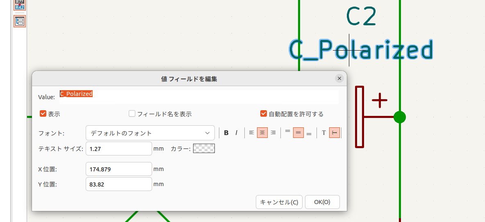
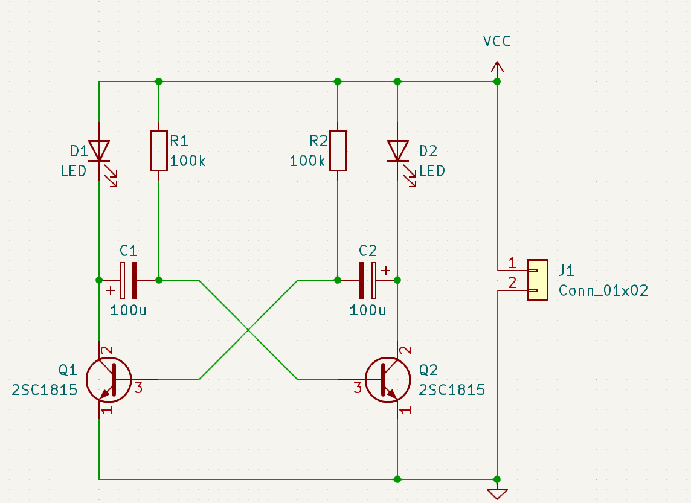
謇矩・ｼ費ｼ壹Μ繝輔ぃ繝ｬ繝ｳ繧ｹ險伜捷縺ｫ逡ｪ蜿ｷ繧偵▽縺代ｋ
繝ｪ繝輔ぃ繝ｬ繝ｳ繧ｹ險伜捷縺ｫ逡ｪ蜿ｷ繧偵▽縺代ｋ縲・繧｢繝弱ユ繝ｼ繧ｷ繝ｧ繝ｳ繧呈款縺礼分蜿ｷ繧偵▽縺代ｋ縲・/p>
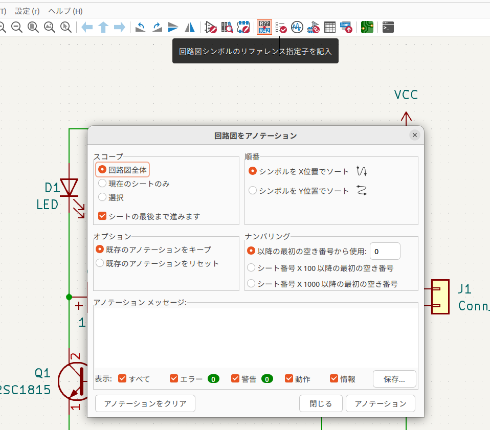
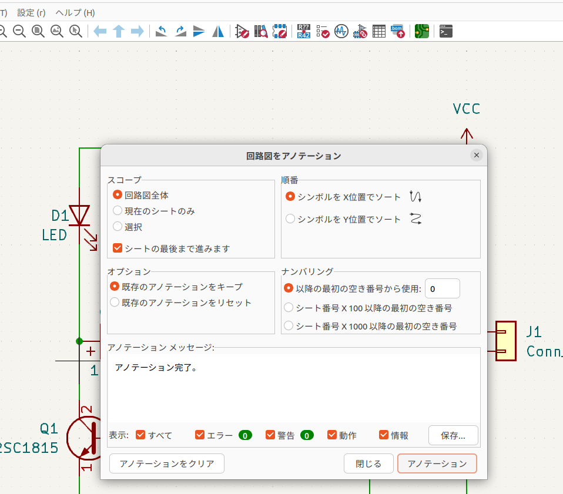
謇矩・ｼ包ｼ壹ヵ繝・ヨ繝励Μ繝ｳ繝医・髢｢騾｣莉倥￠
縺吶∋縺ｦ縺ｮ驛ｨ蜩√↓繝輔ャ繝医・繝ｪ繝ｳ繝医ｒ蜑ｲ繧雁ｽ薙※繧句ｿ・ｦ√′縺ゅｋ縲・/p>
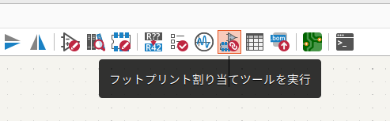
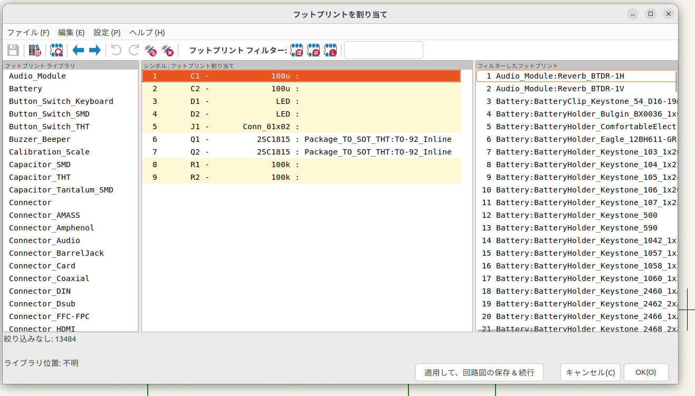
Package_TO_SOT_THT:TO-92_Inline莉･螟悶′繝輔ャ繝医・繝ｪ繝ｳ縺悟牡繧雁ｽ薙※繧峨ｌ縺ｦ縺・↑縺・・/p>
縺ｧ縺ｯ莉･荳九・繧医≧縺ｫ險ｭ螳壹☆繧九・/p>
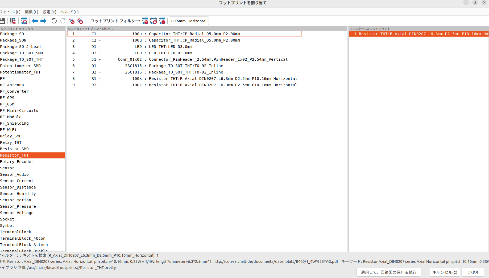
譛蛻昴°繧・SC1815縺ｫ縺ｯPackage_TO_SOT_THT:TO-92_Inline縺悟牡繧雁ｽ薙※繧峨ｌ縺ｦ縺・ｋ縺碁俣髫斐′迢ｭ縺・◆繧√・繧薙□莉倥￠縺碁屮縺励＞
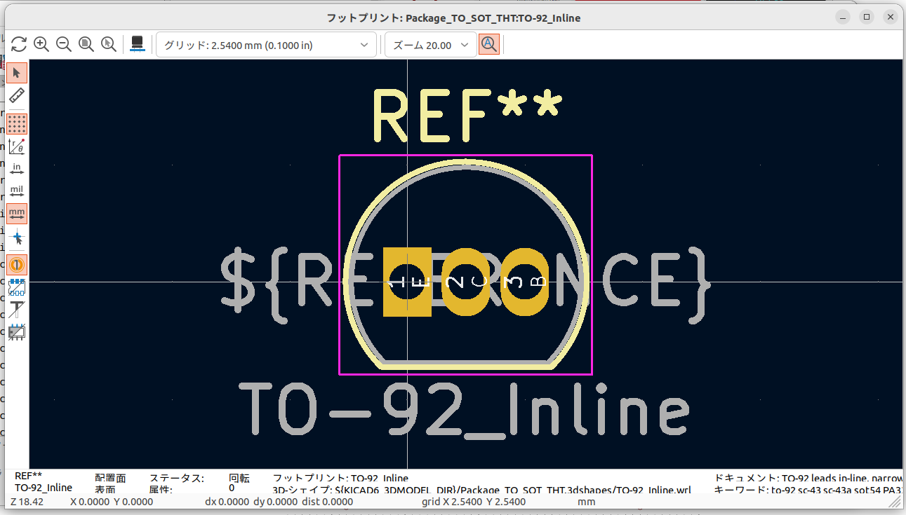
縺昴％縺ｧPackage_TO_SOT_THT:TO-92_Inline_Wide繧剃ｽｿ逕ｨ縺吶ｋ縺ｨ繧医＞
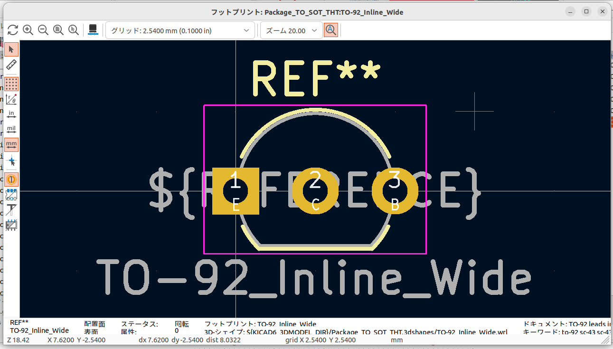
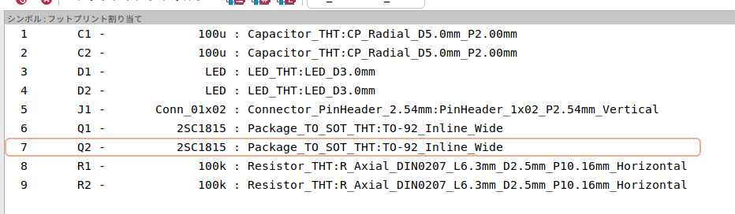
謇矩・ｼ厄ｼ哘RC螳溯｡・/h3>
erc縺ｯ譛ｪ驟咲ｷ夂ｮ・園繧・・蜉帙ヴ繝ｳ蜷悟｣ｫ縺ｮ蜃ｺ蜉帙↑縺ｩ縺ｮ遒ｺ隱阪ｒ閾ｪ蜍輔〒縺翫％縺ｪ縺・ｩ溯・縲・
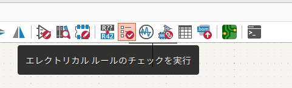
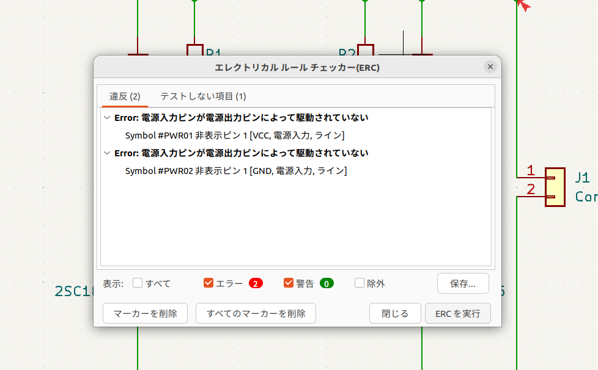
縺励°縺励∝撫鬘後↑縺・屓霍ｯ縺ｧ縺ゅ▲縺ｦ繧ゅお繝ｩ繝ｼ繧・ｭｦ蜻翫′陦ｨ遉ｺ縺輔ｌ繧九％縺ｨ縺後≠繧九・縺薙・蝣ｴ蜷医・繧ｨ繝ｩ繝ｼ縺ｯ辟｡隕悶〒縺阪ｋ縲・/p>
陬懆ｶｳ 縺・°繧医ｊCSV縺ｧ繧ｨ繧ｯ繧ｹ繝昴・繝医☆繧九→驛ｨ蜩∝峙荳隕ｧ繧偵お繧ｯ繧ｻ繝ｫ縺ｧ髢九￥縺薙→縺後〒縺阪ｋ縲・/p>
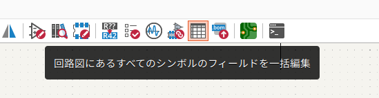
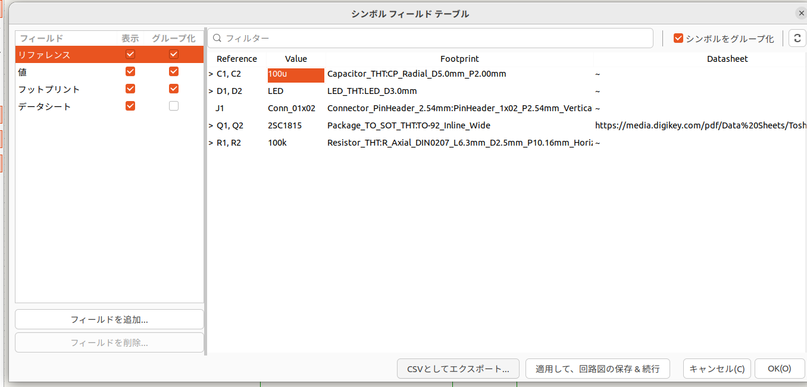
繧ｹ繝・ャ繝暦ｼ抵ｼ壹ヱ繧ｿ繝ｼ繝ｳ險ｭ險茨ｼ・CB・・/h2>
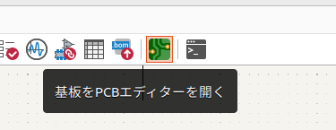
縺吶ｋ縺ｨ・御ｻ･荳九・繧医≧縺ｪ逕ｻ髱｢縺碁幕縺擾ｼ・縺薙％縺ｧ驟咲ｷ壼峙繧剃ｽ懈・縺吶ｋ
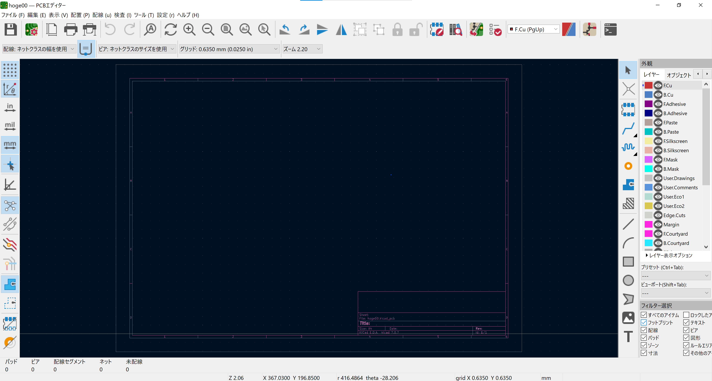
謇矩・ｼ托ｼ夐Κ蜩√ｒ謖√▲縺ｦ縺上ｋ
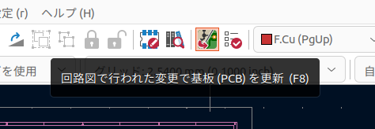
蝗櫁ｷｯ蝗ｳ縺ｧ險ｭ螳壹＠縺溘°繧峨ヵ繝・ヨ繝励Μ繝ｳ繝医ｒ謖√▲縺ｦ縺上ｋ
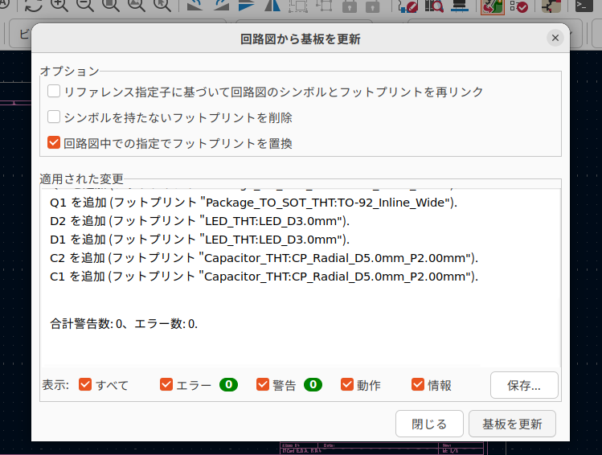
蝓ｺ逶､繧呈峩譁ｰ・弱☆繧九→莉･荳九・繧医≧縺ｪ驛ｨ蜩√′蜃ｺ迴ｾ・・縺薙ｌ縺後ヵ繝・ヨ繝励Μ繝ｳ繝医〒縺ゅｋ・・/p>
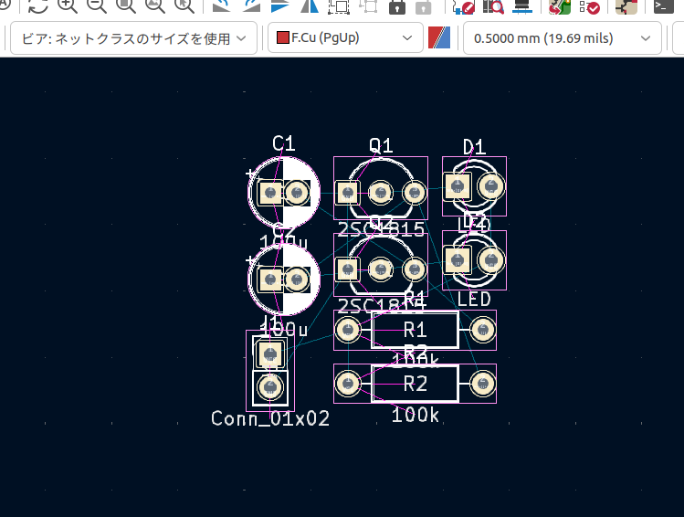
謇矩・ｼ抵ｼ夐・鄂ｮ・檎ｩｴ・悟､門ｽ｢繧呈ｱｺ繧√ｋ
谺｡縺ｫ蝗櫁ｷｯ蜈ｨ菴薙・螟ｧ縺阪＆繧呈ｱｺ繧√ｋ・・/p>
縺昴・蜑阪↓繝斐ャ繝√ｒ螟峨∴繧・莉･荳九〒PCB縺ｮ轤ｹ縺ｮ髢馴囈繧貞､画峩縺ｧ縺阪ｋ
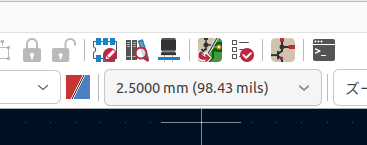
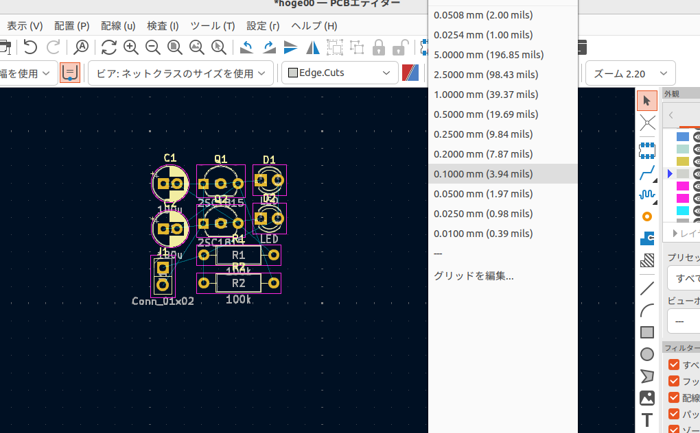
莉雁屓縺ｯ・托ｼ趣ｼ抵ｼ励ｒ縺励ｈ縺・☆繧具ｼ・/p>
繝ｬ繧､繝､繝ｼ縺ｯ蝗櫁ｷｯ縺ｮ髫主ｱ､縺斐→縺ｫ菴ｿ逕ｨ縺吶ｋ・・/p>
- f.cu:陦ｨ髱｢
- b.cu:繧ｦ繝ｩ髱｢
- edge.cuts:螟門ｽ｢
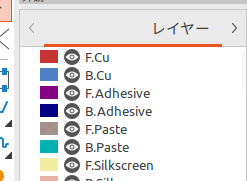
縺ｾ縺壹・螟門ｽ｢繧呈ｱｺ繧√ｋ 繝ｬ繧､繝､繝ｼ繧端edge.cuts]繧帝∈謚槭＠・悟屁隗偵・繝｢繝ｼ繝峨ｒ驕ｸ謚橸ｼ・/p>
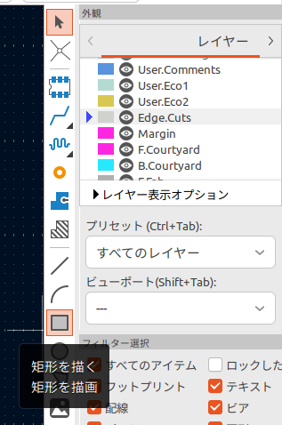
縺昴＠縺ｦ莉･荳九・繧医≧縺ｫ螟門ｽ｢繧呈緒縺・/p>
莉雁屓縺ｯ38.1[mm]ﾃ・8.1[mm]縺ｨ縺吶ｋ・・/p>
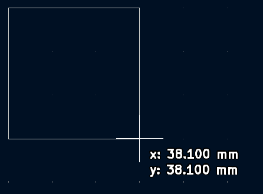
谺｡縺ｫ遨ｴ繧呈ｱｺ繧√※縺・￥
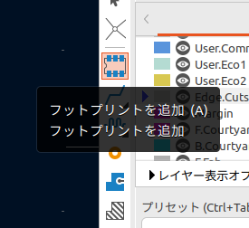
遨ｴ縺ｮ繝輔ャ繝医・繝ｪ繝ｳ繝医ｒ菴ｿ逕ｨ縺吶ｋ・・窶廴ountingHole窶昴Λ繧､繝悶Λ繝ｪ縺ｮ窶廴ountingHole_3.2mm_M3窶昴ヵ繝・ヨ繝励Μ繝ｳ繝医ｒ菴ｿ縺・/p>
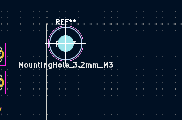
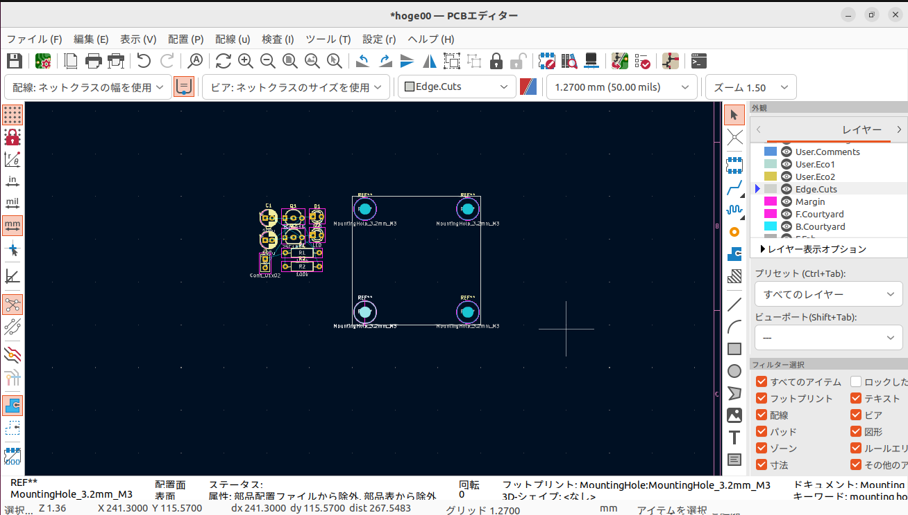
驛ｨ蜩√ｒ鄒弱＠縺丈ｸｦ縺ｹ縺ｦ縺・￥ 驟咲ｷ壹′縺励ｄ縺吶￥縺ｪ繧九ｈ縺・↓荳ｦ縺ｹ繧具ｼ・/p>
謇矩・ｼ難ｼ夐崕貅撰ｼ後げ繝ｩ繝ｳ繝蛾・邱・/h3>
荳ｻ隕√〒縺ゅｋ髮ｻ貅舌→繧ｰ繝ｩ繝ｳ繝峨・驟咲ｷ壹ｒ陦後≧・・驟咲ｷ壹☆繧九→縺阪・邱壹・螟ｪ縺輔・莉･荳九↓遞ｮ鬘槭ｒ霑ｽ蜉縺ｧ縺阪ｋ・・莠医ａ險ｭ螳壹＠縺ｦ縺翫％縺・ｼ・/p>
髮ｻ貅舌・縺ｧ縺阪ｋ縺縺大､ｪ縺上☆繧句ｿ・ｦ√′縺ゅｋ・・縺ｾ縺滂ｼ悟・蜑雁渕逶､縺ｮ縺溘ａ莉雁屓縺ｯ繧ｦ繝ｩ髱｢縺ｫ驟咲ｷ壹☆繧具ｼ・繝ｬ繧､繝､繝ｼ繧定｣丞・縺ｫ險ｭ螳壹☆繧・/p>
縺昴ｌ縺ｧ縺ｯ驟咲ｷ壹＠縺ｦ縺・￥ 2mm縺ｧ驟咲ｷ壹＠縺滂ｼ・/p>
謇矩・ｼ費ｼ夐・邱・/h3>
縺ｧ縺ｯ莉悶・驟咲ｷ壹ｂ陦後≧・・蛻・炎蝓ｺ逶､縺ｮ蝣ｴ蜷茨ｼ檎ｷ壹・蟷・ｒ1.5mm莉･荳翫↓縺吶ｋ縺薙→繧偵♀縺吶☆繧√☆繧具ｼ・/p>
驟咲ｷ壻ｸｭ縺ｫ縺九・縺｣縺ｦ縺励∪縺｣縺ｦ驟咲ｷ壹〒縺阪↑縺・％縺ｨ縺後≠繧具ｼ弱◎繧薙↑縺ｨ縺阪・陦ｨ驟咲ｷ壹ｒ菴ｿ逕ｨ縺吶ｋ・・/p>
雋ｫ騾壹ン繧｢繧帝・鄂ｮ繧帝∈謚・/p>
縺吶ｋ縺ｨ縺薙・繧医≧縺ｫ縺ｾ縺溘＄縺薙→縺後〒縺阪ｋ・・/p>
螳梧・・・蟆代＠豎壹＞縺鯉ｼ後％繧後〒濶ｯ縺励→縺励ｈ縺・ｼ趣ｼ趣ｼ・/p>
縺ｧ縺ｯ繝吶ち繧ｰ繝ｩ繧ｦ繝ｳ繝峨↓縺､縺・※隱ｬ譏弱☆繧具ｼ・荳逡ｪ雋闕ｷ縺後°縺九ｋGND繧貞､ｧ縺阪￥縺励◆繧奇ｼ後ヮ繧､繧ｺ縺ｮ蠖ｱ髻ｿ繧貞女縺代↓縺上￥縺励◆繧翫→萓ｿ蛻ｩ縺ｪ縺ｮ縺ｧ縺ｨ繧翫≠縺医★縺励→縺阪∪縺励ｇ縺・ｼ・/p>
蝪励ｊ貎ｰ縺励だ繝ｼ繝ｳ繧帝∈謚橸ｼ・/p>
蝗櫁ｷｯ縺ｮ蟾ｦ荳顔ｫｯ繧偵け繝ｪ繝・け縺励※莉･荳九・繧医≧縺ｫ險ｭ螳壹☆繧具ｼ・- B.cu繧帝∈謚・- GND繧帝∈謚・- 螳溽ｷ壹ｒ驕ｸ謚・/p>
縺昴＠縺ｦ蝗幄ｧ偵・遶ｯ繧貞・縺ｦ驕ｸ謚槭☆繧九→
縺昴＠縺ｦ蝪励ｊ縺､縺ｶ縺励ｒ陦後≧・・/p>
縺ｨ繧翫≠縺医★縺薙ｌ縺ｧ螳梧・・・/p>
謇矩・・壹ョ繧ｶ繧､繝ｳ繝ｫ繝ｼ繝ｫ繝√ぉ繝・け
Kicad縺ｫ縺ｯ蝗櫁ｷｯ繝√ぉ繝・け縺ｮ讖溯・縺後≠繧九・縺ｧ縺昴ｌ繧剃ｽｿ逕ｨ縺励※・碁・邱壹ｏ縺吶ｌ縺ｪ縺ｩ縺後↑縺・°遒ｺ隱阪☆繧具ｼ・/p>
隴ｦ蜻翫ｈ繧翫ｂ繧ｨ繝ｩ繝ｼ繧剃ｸｻ縺ｫ隕九ｋ・・莉雁屓縺ｯ繧ｨ繝ｩ繝ｼ縺ｯ縺ｪ縺九▲縺滂ｼ・/p>
隴ｦ蜻頑枚縺ｯ繧ｷ繝ｫ繧ｯ・郁｡ｨ髱｢縺ｮ譁・ｭ励→縺具ｼ峨↑縺ｮ縺ｧ・御ｻ雁屓縺ｯ蛻・炎蝓ｺ逶､縺ｮ縺溘ａ辟｡隕悶＠縺ｦOK・・/p>
縺薙ｌ縺ｫ縺ｦ蝗櫁ｷｯ螳梧・縺ｧ縺呻ｼ・/p>
逡ｪ螟也ｷｨ
繧ｷ繝ｳ繝懊Ν・後ヵ繝・ヨ繝励Μ繝ｳ繝医・菴懊ｊ譁ｹ・・莉･荳九・・偵▽繧剃ｽｿ逕ｨ縺励∪縺呻ｼ・/p>
繧ｷ繝ｳ繝懊Ν縺ｮ菴懊ｊ譁ｹ
繧ｷ繝ｳ繝懊Ν繧ｨ繝・ぅ繧ｿ繝ｼ繧定ｵｷ蜍輔☆繧・/p>
繝輔ぃ繧､繝ｫ縺九ｉ譁ｰ隕上Λ繧､繝悶Λ繝ｪ繧帝∈謚橸ｼ・/p>
繧ｰ繝ｭ繝ｼ繝舌Ν縺ｧ菴懈・
莉ｻ諢上・蝣ｴ謇縺ｫ菴懈・
菴懈・縺励◆繝ｩ繧､繝悶Λ繝ｪ繧帝∈謚槭＠縺溽憾諷九〒譁ｰ隕上す繝ｳ繝懊Ν繧剃ｽ懈・・・/p>
繧ｷ繝ｳ繝懊Ν縺ｮ蜷榊燕繧・Μ繝輔ぃ繝ｬ繝ｳ繧ｹ謖・ｮ壼ｭ舌ｒ豎ｺ繧√ｋ・・莉雁屓縺ｯWi-Fi繝｢繧ｸ繝･繝ｼ繝ｫ ESP32-C3-WROOM-02-N4縺ｮ繧ｷ繝ｳ繝懊Ν繧剃ｽ懈・縺励※縺・￥・・/p>
繝・・繧ｿ繧ｷ繝ｼ繝医ｒ隕九※縺ｿ繧九→・御ｻ･荳九・繧医≧縺ｫ險倩ｼ峨＆繧後※縺・ｋ
縺薙ｌ繧峨・繝・・繧ｿ繧偵ｂ縺ｨ縺ｫ菴懈・縺励※縺・￥・・/p>
縺薙ｓ縺ｪ諢溘§縺ｧ螳梧・・・/p>
繝輔ャ繝医・繝ｪ繝ｳ繝医・菴懊ｊ譁ｹ
譁ｰ隕上Λ繧､繝悶Λ繝ｪ繧剃ｽ懈・縺暦ｼ梧眠隕上ヵ繝・ヨ繝励Μ繝ｳ繝医ｒ菴懈・縺吶ｋ・・/p>
SMD縺ｯ陦ｨ髱｢螳溯｣・・縺薙→
莉･荳九・繝・・繧ｿ繧偵ｂ縺ｨ縺ｫ菴懈・縺吶ｋ
縺・∪縺・％縺ｨ鬆大ｼｵ縺｣縺ｦ菴懊ｍ縺・ｼ・/p>
邱壹ｒ繝繝悶Ν繧ｯ繝ｪ繝・け縺ｧ髟ｷ縺輔ｒ縺九ｌ縺ｾ縺・/p>
縺薙ｌ縺ｧ濶ｯ縺励→縺励ｈ縺・/p>
闡苓・Shion NoguchiNote